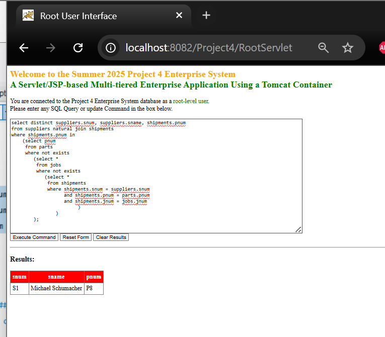
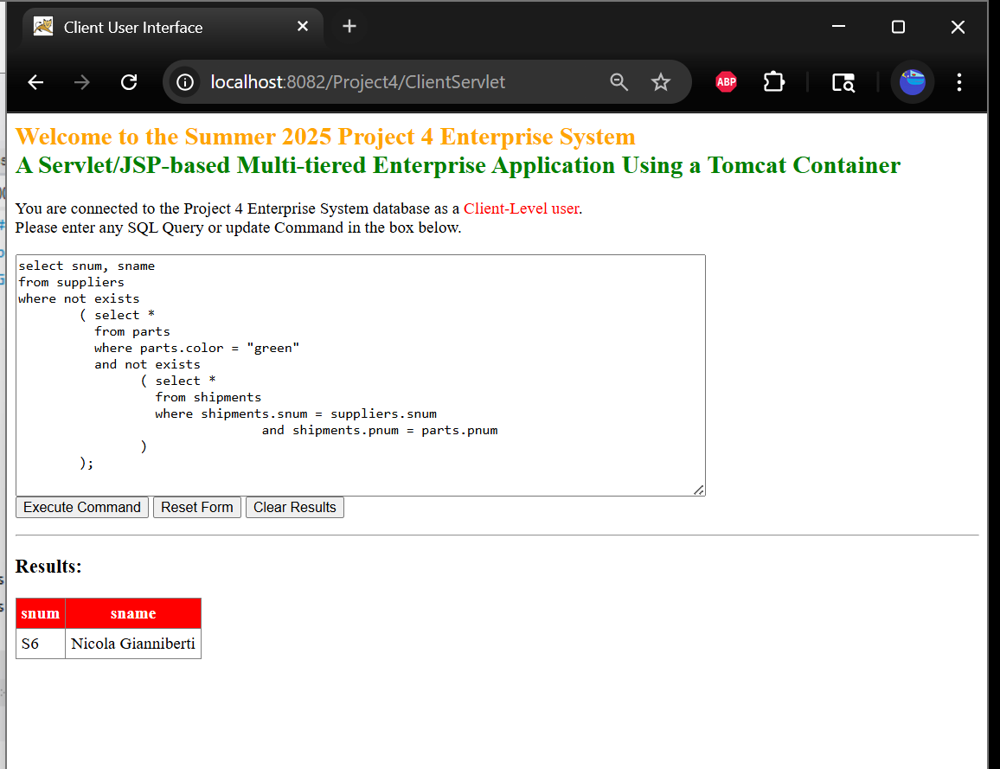

Project Screenshots


Project Description
Developed a fully functional three-tier web-based application using JSP, servlets, and a MySQL backend. The system supports multiple user roles—root, client, and accountant—each with distinct privileges, including SQL command execution and report generation via stored procedures. Implemented authentication, secure database access via properties files, and server-side business logic for dynamic data updates. This project integrated knowledge from previous assignments in GUI design, Java programming, and database management, culminating in a distributed application demonstrating real-world enterprise workflows.
Skills Learned
- Web application development with JSP and servlets
- MySQL database design and management, including foreign keys and referential integrity
- JDBC for database connectivity and CallableStatement for stored procedures
- User authentication and role-based access control
- Server-side business logic implementation
- HTML/CSS for front-end interfaces and dynamic form handling
- Integration of multi-tier architecture and deployment on Tomcat
- Debugging, testing and iterative development in a production-like environment